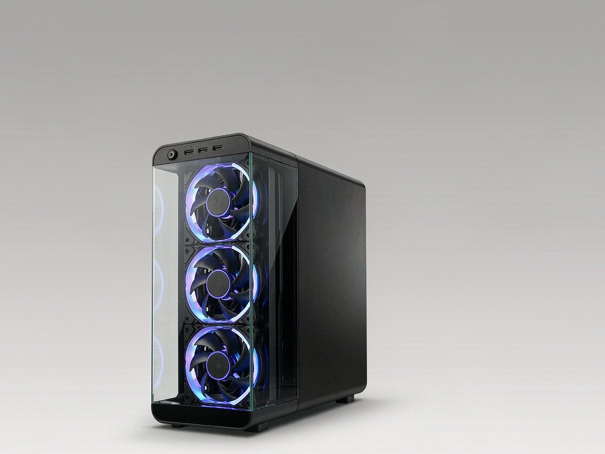

Under S$1,000, the goal is not "the most expensive parts we can fit". It is the best frame rate at the resolution you actually play at. A balanced machine with a new board, new storage and a tested graphics card will beat a machine stuffed with one flagship part and four cheap compromises.

The S$900 build, part by part
Our Tier 1 machine is the answer to "gaming PC under $1000 Singapore". It pairs an RTX 3060 12GB with a Ryzen 5 3600, 16GB of DDR4, a 1TB NVMe SSD, a 650W power supply and an Aqua Uno case. At S$900 it includes testing, delivery and setup — there is no separate build fee hiding at the end.
The 1TB drive is standard rather than an upgrade, which matters more than it sounds. Modern games regularly exceed 100GB, and a machine that fills up in a month is not a good budget buy. Wi-Fi is included too.
What it actually runs
These are our own bench numbers, not marketing estimates. At 1080p, Valorant, CS2, Dota 2 and League of Legends sit above 144fps. Apex, Fortnite and Overwatch 2 run at roughly 60–100fps. GTA V, Minecraft, Genshin and Wuthering Waves hold 60fps or better on high settings. Heavier titles like Cyberpunk 2077 and Alan Wake 2 need medium settings at 1080p.
At 1440p the picture changes. Less demanding games stay smooth, and FIFA-style titles can still pass 120fps, but the RTX 3060 is not a high-refresh 1440p card. If that is your monitor, be honest about it before ordering.
Why the used CPU and GPU are not a compromise
New electronics lose value the moment they leave the shop; performance does not fall at the same rate. A graphics card that cost far more new can still deliver the same frames three years later, provided it has been looked after. That price gap is where the entire saving comes from.
We buy those two parts one at a time, not by the pallet. Each card is checked for artefacts under sustained load, fan noise and temperature creep, then cleaned and serviced. If it fails, it does not go into a machine. Everything around the CPU and GPU — board, memory, storage, PSU, cooler and case — is new. That is the difference between this and buying someone's old PC as a whole.
Where an under-S$1,000 build reaches its limit
Two places, mostly. First, 1440p at high refresh: our S$1,050 tier with an RTX 3070 is the point where that starts to feel worthwhile. Second, workloads that lean on the GPU all day, such as streaming or 3D work. An RTX 3080 build sits at S$1,300.
The other limit is the monitor. None of our tiers include a screen, because many people already own one and paying for a second is wasteful. If you do need one, a 27-inch 1440p 180Hz panel can be added for S$165 and set up with the machine.
What to check before you buy
Ask what is second-hand — all of it, not just the GPU. Ask whether storage is included or an upgrade. Ask what testing the machine went through and whether there is a warranty card with a real test certificate. A cheap quote that cannot answer those questions usually costs more by the time the machine is running.
You can read the full budget gaming PC price list, or use the configurator to see how each option changes the total before you ask us anything.
Common questions
Can you build a gaming PC under S$1,000 in Singapore?
Yes. Our S$900 Tier 1 build is a complete, tested machine with an RTX 3060, Ryzen 5 3600, 16GB RAM and a 1TB NVMe — including delivery and setup in Singapore.
What games run well on a S$900 build?
Valorant, CS2, Dota 2 and League run at over 144fps at 1080p. Apex, Fortnite and Overwatch 2 sit around 60–100fps at 1080p, and GTA V, Minecraft and Genshin run comfortably above 60fps. Cyberpunk and Alan Wake 2 need medium settings at 1080p.
Why does buying the CPU and GPU second-hand save so much?
GPUs lose a large share of their retail price in the first couple of years while still delivering most of their performance. Buying those two parts second-hand funds a new motherboard, new storage, new RAM and a new case at the same total price.
What can't you get for under S$1,000?
High-refresh 1440p and GPU-heavy workloads. An RTX 3070 or 3080-class card pushes the build to S$1,050 or S$1,300. If your monitor is 1440p at 120Hz or above, saving the extra S$150 usually buys a visible difference.
Is a monitor included in a gaming PC under $1000?
No. All our tiers assume you already have a screen. A 27-inch 1440p 180Hz monitor can be added for S$165, set up and colour-checked with the machine.
Tell us your games and your monitor — we will tell you what S$1,000 buys for you.
See the S$900 build Build yours Get a quote